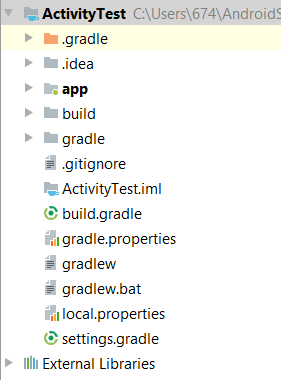
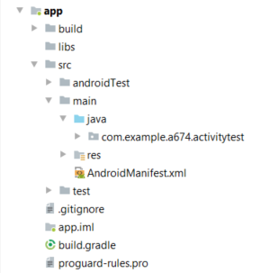

Android项目文件结构说明
项目文件结构如图所示:

1、.grade与.idea
这两个文件是Android studio自动生成的文件不需要我们编辑。
2、app
项目中的代码、资源都在这个目录下。我们的开发工作主要在该目录下进行。
3、bulid
编译时自动生成的文件，不需要我们关心。
4、gradle
包含了gradle wrapper的配置文件，使用gradle wrapper的方式不需要提前将gradle下载好，会根据本地缓存情况自动下载gradle。Android Studio默认不启动gradle wrapper方式，可以通过File->Setting->Build,Execution,Deplyment->Gradle,进行配置更改。
5..gitignore
有关版本控制的文件
6.build.grade
项目全局的gradle构建脚本，一般不需要修改
7.gradlew gradlew.bat
用来在命令行中执行gradle命令，gradlew在linux或者mac中执行，gradlew.bat在Win系统下执行
8. gradle.properties
gradle的全局配置文件，影响项目中所有的gradle编译脚本
9.ActivityTest.iml
标识是一个IDEA项目，不需要关心
10.local.properties
指定SDK路径
11.settings.gradle
指定引入的模块，一般自动完成。
app文件说明

1、build
编译时自动生成的文件，不需要关心
2、libs
用到的第三方包，放到该目录下都会自动添加到构建路径中
3、androidTest
编写测试用例，可以对项目进行一些自动化测试
4、java
放我们的java代码的地方
5、res
项目资源文件，drawable 图片文件夹、 mipmap 图标文件夹 都有不同的分辨率、layout布局文件夹、values字符串文件
6、progurad-rules.pro
代码混淆规则
7、剩下的先不用关心
··············
打开AndroidMainfest.xml文件可以看到如下代码。application标签里面的内容是我们注册活动，所有的活动都必须要在该文件下注册。1
2
3
4
5
6
7
8
9
10
11
12
13
14
15
16
17
18
19
20
21
22<?xml version="1.0" encoding="utf-8"?>
<manifest xmlns:android="http://schemas.android.com/apk/res/android"
package="com.example.a674.activitytest">
<application
android:allowBackup="true"
android:icon="@mipmap/ic_launcher"
android:label="@string/app_name"
android:roundIcon="@mipmap/ic_launcher_round"
android:supportsRtl="true"
android:theme="@style/AppTheme">
<activity android:name=".FirstActivity">
<intent-filter>
<action android:name="android.intent.action.MAIN" />
<category android:name="android.intent.category.LAUNCHER" />
</intent-filter>
</activity>
<activity android:name=".SecondActivity"></activity>
</application>
</manifest>
这里我们看到注册了两个活动.FirstActivity和.SecondActivity。在.FirstActivity中还有一个标签intent-filter在该标签下<action android:name=”android.intent.action.MAIN” />表示这个Activity是该应用的主活动，<category android:name=”android.intent.category.LAUNCHER” />表示这是应用启动的第一个活动。